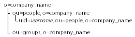

When
using the User service to create human-centric processes, it is
often advantageous to assign tasks to individuals based on their
role in the process. This strategy is more flexible than assigning
tasks to a specific person because, typically, different people
are involved in different instances of the process.
This Quick Start discusses the use of the LDAP service, which
is part of LiveCycle Foundation. It also discusses the User service,
which you can use if you have Process Management.
Typically, roles in processes correspond with roles in a company.
You can leverage information in your LDAP server to assign tasks
to users if the user records are organized according to the company’s
organizational structure or if the records themselves contain organizational
information.
For example, a company’s internal purchase-request process requires
that a person’s manager approve the purchase request before the
purchase is made. The role of manager is constant; however, the
person who requests the purchase determines who the manager is.
The user records in the corporate LDAP server include the identification
of the user’s manager. The LDAP server can be queried to find out
who that person’s manager is who submitted the purchase request.
The process diagram that implements this business process can
use the LDAP Query operation of the LDAP service to query the LDAP
server. After the identification of the manager is retrieved, the
task for approving the purchase request can be assigned to that
manager. The following illustration shows the part of the process
diagram that performs the LDAP query and the task assignment.
The following illustration describes the structure of the information
in the LDAP server that the previously described example process
uses.

The records with the distinct name (DN) in the format uid=
username
,
ou=
people
, o=
company_name
contain information about
individual company employees. The record includes the following
attributes:
-
uid:
-
The unique identification of the user
-
manager:
-
The DN of the employee’s manager
Prerequisites
For assigning tasks based on roles, you are typically retrieving
the identification of a user based on some other information (for
example, job title, business unit to which the user belongs, or
both.
Several pieces of information need to be available at design
time or at run time to use the LDAP service to perform queries:
-
An understanding of how information is organized in the
LDAP server. To perform the query, you need to specify a location
in the LDAP schema to search.
-
Specific information and its relation to the sought-after
information in the LDAP repository. This information is used to
create a search filter that identifies the data to retrieve.
-
A
string
or
list
value
that stores the retrieved information, depending on whether you
are retrieving information for one or many LDAP records.
In our example process, the user identification of the person
who requests the purchase is used in the query to find their manager.
Configuration
To configure an LDAP Query operation, you need to identify
the area of the LDAP schema that you are searching, the type of
LDAP object that you are searching, and the search filter to use.
The Query tab of the LDAP Query Options Editor is configured
to search for the record that represents the user who submits the
purchase request:
-
Base DN:
-
o=company_name
(the topmost level in the
directory.)
-
Search Context:
-
ou=people, o=company_name
(The level in
the directory that contains the records that are being searched.)
-
Search Filter:
-
(uid={$/process_data/@creator_id$})
(The example
process is invoked when the person submits the purchase request,
and the identification of the user is stored at the location
/process_data/creator_id
.)
-
Search Scope: ONE LEVEL (The records below the value
for Search Context.)
-
The Output tab of the LDAP Query Options Editor is used to
specify that the value of the
manager
attribute
that the returned record contains is stored in a
string
variable
named
stringVar
:
-
Value:
-
manager
-
Location:
-
stringVar
When the query is executed
at run time, the
stringVar
variable contains the DN
of the user’s manager, which is in the format
uid=
user id
, ou=people, o=company_name
.
The task that the Assign Task operation generates needs to be assigned
to the user that this DN represents.
The Select Initial User
property of the Assign Task operation is assigned the
user id
part
of the manager’s DN (the user identification). An XPath expression
that resolves to the
stringVar
variable is used.
The
substring-after
and
substring-before
functions
are used to isolate the
user id
portion:
substring-after(substring-before(/process_data/@stringVar, ","),"uid=")